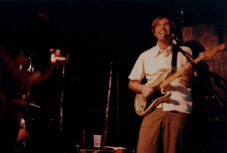
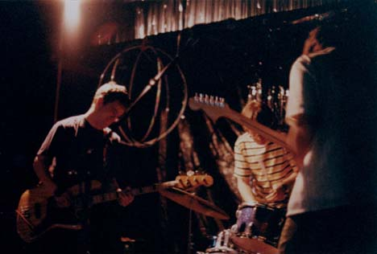
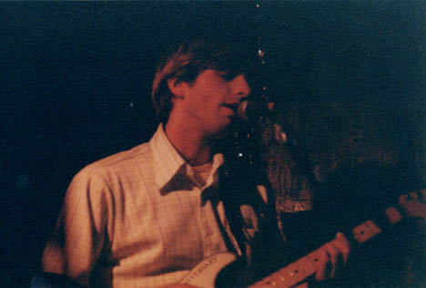
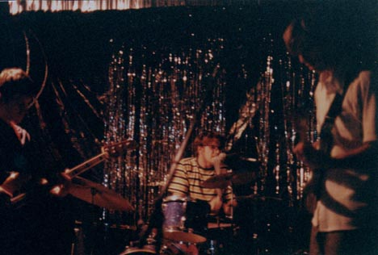
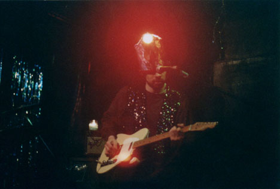
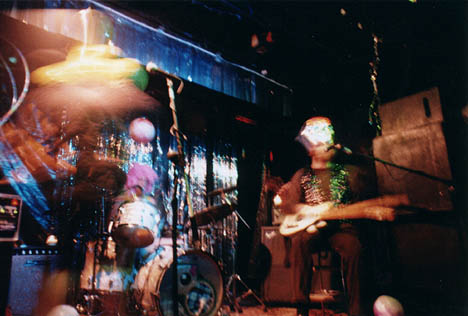
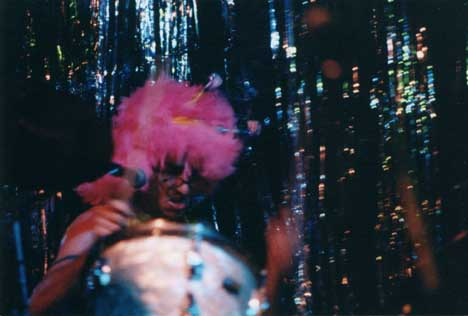
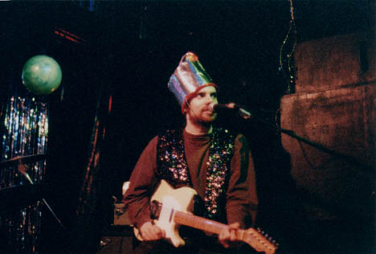
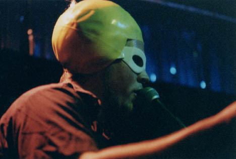

Big Orange Crayonmusical thingsLouder Please show featuring The Stars of Rock and the as-of-then-unnammed band with Jason Martin and Matto and Mike (whose last names I don't know) Valentine's, Albany, NY April 30, 2001 Yep, another review about a week after the show. Stupid finals week. Anyway, this show was so cute! (in the strange way that I use the word "cute" at least) I always look out for Jason Martin shows and the Stars of Rock were pretty rad themselves. The Stars of Rock were the first ones to play - I guess I'll call them indie pop. Their show was hilarious! And rockin'. When a band covers AC/DC they are rockin', especially if a guy wearing a large, quilted, cat helmet joins them. I don't remember the names of any of their songs (not their fault, I just haven't gotten to the point where I wear ear-plugs and take notes at shows), but I remember them being really good in a kind of classic Kindercore sort of way. Yay them! The other band played next. (Yay for unhelpful sentences!) They came out in their freaky get-up with the drummer in a dress hooting and hollering with his hands over his head, the bass player in a shower cap and sunglasses, and Jason Martin with a bucket-and-flashlight assembly on his head. Things pretty much continued in this vein. They were bursting with manic creativity and I got the impression that although nothing they did made all that much sense, it all fit together to form some strange, perfect whole. Or maybe they're just a bunch of lunatics. Either way, it was totally entertaining and fun and I'd totally go out to be confused by them again. Apparently their name is now The Tower. They had a big thing at the end where they went through a list that someone gave them of potential band names - I still say they should have used "Imaginary Angry Face." Pictures! The Stars of Rock     Jason/Matto/Mike   I stopped it down and did an exposure of about 6 seconds - that's why the bass player is a cloud. I'm suprised I kept it so steady - yay me :)    Dorky technical stuff that nobody could possibly care about but I'm putting in for my own reference: Camera: Nikkormat FTN Lenses: Nikkor-P 105mm f/2.5, Nikkor-S.C 50mm f/1.4, Nikkor 24mm f/2.8 Film:Kodak Royal Gold 1000 (I hate this stuff, but yay since this was the last roll of it I have) Aperture: wide open all the time, except f/11 for the long one Shutter speeds: between 1/15 and 1/60, plus the long one |